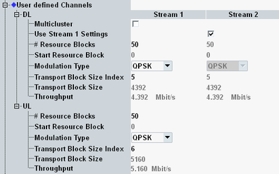
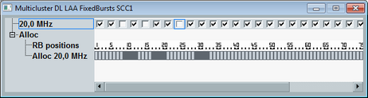

The parameters in this section configure user-defined channels for normal operation mode (no LAA, no eMTC). Option R&S CMW-KS510 is required.
To display these settings, select the scheduling type "User-Defined Channels", see "Scheduling Type".
To configure the channels, proceed as follows (for UL and DL):
Select the cell bandwidth (see "Physical Cell Setup").
If you want to use multi-cluster, enable it.
For UL, see "Miscellaneous Connection Settings Part 2").
Configure the RB allocation.
For UL multi-cluster, configure first cluster 1, then cluster 2.
For DL multi-cluster, press the button "RB Clusters".
Select the modulation type.
If you want to use UL 64-QAM, configure also "Enable 64-QAM UL Support".
Select the transport block size index.
For valid parameter combinations and background information, see "User-Defined Channels".
For carrier aggregation scenarios, you can configure the settings per component carrier.

You can enable DL multi-cluster allocation only for resource allocation type 0 (resource block groups). Option R&S CMW-KS510/-KS512 is required (without CA/with CA).
To use DL multi-cluster allocation, enable the checkbox. The button "RB Clusters" is displayed. Press the button to open the following configuration window.

In this dialog box, you can enable or disable each individual RBG via the checkboxes.
Remote command:This parameter is visible if the selected transmission scheme involves several downlink streams.
If you enable this parameter, all stream 1 settings are also applied to stream 2.
If you disable this parameter, you can configure some DL parameters individually per stream. Other parameters are configurable for stream 1 only and are applied automatically to stream 2.
Remote command:"# Resource Blocks" selects the number of allocated resource blocks.
"Start Resource Block" specifies the number of the first allocated resource block. This parameter allows you to shift the allocated RBs within the cell bandwidth.
For UL multi-cluster allocation, the two resource block settings are configurable separately for cluster 1 and cluster 2. For DL multi-cluster allocation, see "Multicluster".
"Modulation Type" selects the modulation type and influences the allowed transport block size indices. 256-QAM requires option R&S CMW-KS504/-KS554.
"Transport Block Size Index" selects the TBS index. The resulting "Transport Block Size" in bits is displayed
Remote command:Plus corresponding PCC commands.
Displays the expected maximum throughput in Mbit/s (averaged over one frame). The value is calculated per downlink and uplink stream.
Remote command:Only displayed in the main view: Effective channel code rate, i.e. the number of information bits (including CRC bits) divided by the number of physical channel bits on PDSCH/PUSCH.
Remote command: